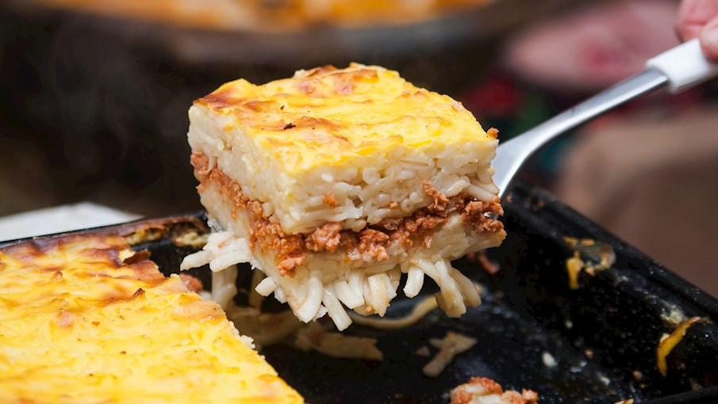

Spaghetti Pie

Spaghetti pie is a hearty and delicious dish that combines spaghetti with a savory meat sauce and cheese, baked into a pie shape.
Ingredients:
- 8 oz spaghetti
- 1 lb ground beef
- 1 onion, chopped
- 1 bell pepper, chopped
- 2 cloves garlic, minced
- 1 can (14.5 oz) diced tomatoes
- 1 can (8 oz) tomato sauce
- 1 tsp Italian seasoning
- 1/2 tsp salt
- 1/4 tsp black pepper
- 1/4 tsp red pepper flakes (optional)
- 2 large eggs
- 1/2 cup grated Parmesan cheese
- 1/2 cup ricotta cheese
- 2 cups shredded mozzarella cheese
- Cooking spray
Steps:
- Preheat the oven to 350°F (175°C).
- Cook the spaghetti according to the package instructions. Drain and set aside.
- In a large skillet, brown the ground beef over medium-high heat, breaking it up with a spatula. Add the onion, bell pepper, and garlic, and cook for 5-7 minutes, or until the vegetables are tender.
- Add the diced tomatoes, tomato sauce, Italian seasoning, salt, black pepper, and red pepper flakes (if using) to the skillet. Stir to combine and bring the mixture to a simmer. Let it cook for 10-15 minutes, or until the sauce has thickened.
- In a large mixing bowl, whisk the eggs, Parmesan cheese, and ricotta cheese together.
- Add the cooked spaghetti to the bowl and toss to coat the noodles with the cheese mixture.
- Grease a 9-inch pie dish with cooking spray. Arrange half of the spaghetti mixture in the bottom of the dish.
- Spoon half of the meat sauce over the spaghetti layer.
- Sprinkle 1 cup of shredded mozzarella cheese over the meat sauce.
- Repeat the layers with the remaining spaghetti mixture, meat sauce, and mozzarella cheese.
- Cover the dish with foil and bake for 25 minutes.
- Remove the foil and bake for an additional 10-15 minutes, or until the cheese is melted and golden brown.
- Let the spaghetti pie cool for a few minutes before slicing and serving.